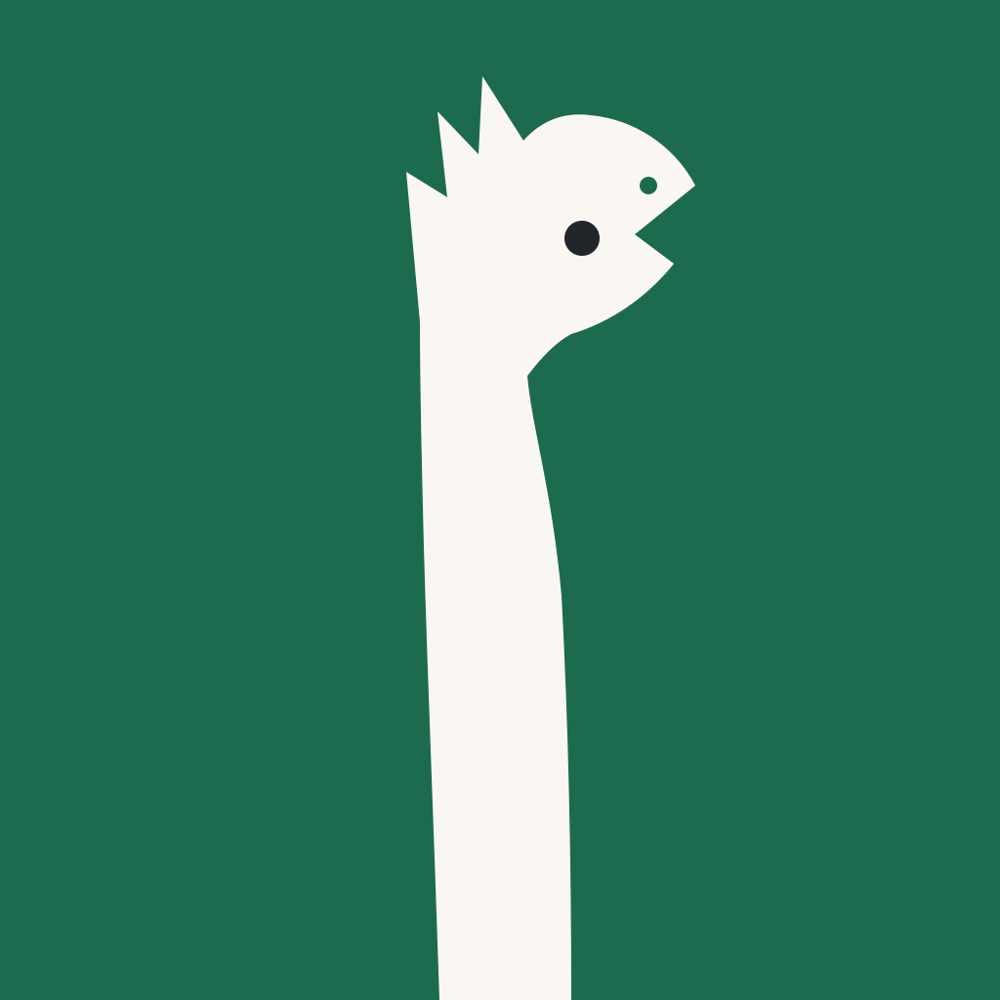

G25.09 · issue #707 · эпік #346 · шаблон 3/4
Сацыяльная картка — 1200×630
Адзін прадукт + адзін сэнс на канву: назва прадукта, ідэнтыфікавальны сказ, дракон з формулай-зваротам, бурштынавы акцэнт медальёна. Без URL на канве: og:url/og:image канчаткова абсалютызуюцца ад siteOrigin, які да публікацыі G10.02.b неапублікаваны (web/lib/app-links.ts) — выяўленая канва нічога не абяцае пра адрас.
Крыніцы: брыф v1 (
a11ea86) · канон G06.07 · пазы G25.03 · медальён G25.05 · слот іконкі — напрамак G24.02/#693. Патрабаванне праверана 12.10.2026: og:image 1200×630 (1.91:1), PNG/JPG ≤ 2 МБ, мета og:image:width/height; X summary_large_image малюе 1200×675 (16:9) з падразаньнем — крытычнае змесьціва трымаецца ў бяспечнай зоне 1080×510 пасярэдзіне.§1 · Беларуская і англійская канвы пункцір — бяспечная зона 1080×510 (пасярод 1200×630); унутры яе трымаецца ўсё крытычнае
web.ui.privacyIntro «KUDY — аўдыёгіды для гарадскіх прагулак» (без «Гэтая старонка…»); малая стужка — факт web.ui.audioAndText + native.chrome.access.free + тэза web.ui.privacyWeb. Рэпліка — даслоўна формула брыфа §Сутнасць. Іконка — слот: паказаны напрамак I1 з G24.02 як пазнака, фінальны асет — пасля выбару ўладара ў #693.safe zone 1080×510
KUDY
Audio guides for city walks
audio and text · free · no account

Where to? Let’s go and see

concept · icon awaits #693
§2 · Уключэнне ў старонку меты трымаюць памер яўна — платформа рэндэрыць прэв'ю адразу без перавымянення
<meta property="og:title" content="KUDY — аўдыёгіды для гарадскіх прагулак">
<meta property="og:description" content="Бясплатны вэб-канал: тэкст і аўдыё ў браўзеры. Поўная версія — у дадатку.">
<!-- og:image і og:url абсалютызуюцца ад siteOrigin у web/lib/app-links.ts пасля G10.02.b;
да публікацыі origin { kind: "unpublished" } і не мацуецца ў разметцы. -->
<meta property="og:image" content="{siteOrigin}/og/kudy-card-be.png">
<meta property="og:image:width" content="1200">
<meta property="og:image:height" content="630">
<meta name="twitter:card" content="summary_large_image">
Сніпет — узор разметкі для будучай вэб-публікацыі; сам шаблон нідзе яго ўключае. Прысваенне адрасаў і публікацыя — асобныя рашэнні (Out of scope карткі).

KUDY